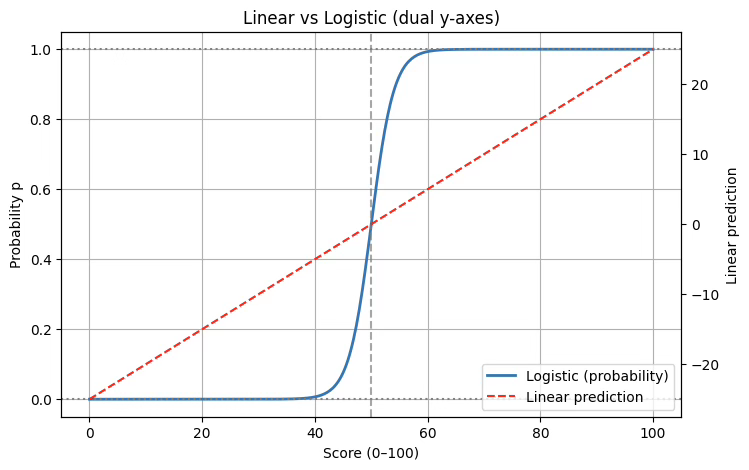
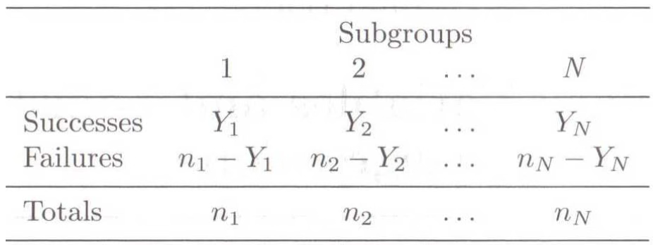
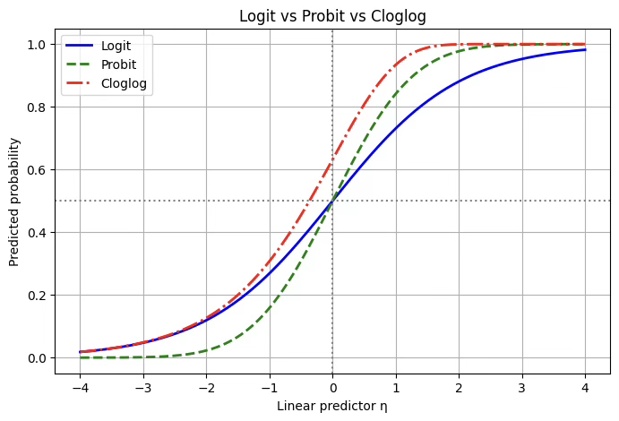
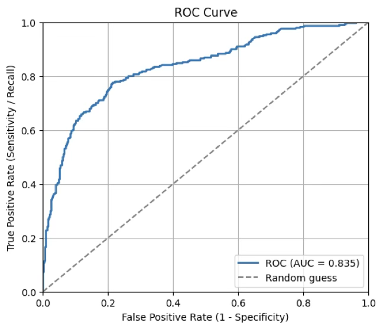

회귀분석 5. 로지스틱회귀
chapter 1. 일반화 선형모형
1. 일반화 선형모형 개념
전통적인 선형회귀모형은 목표변수가 연속형이고 정규분포를 따른다는 가정을 전제로 한다. 하지만 실제 자료에서는 목표변수가 이진형, 계수형, 범주형 등 다양한 형태로 나타난다. 예를 들어 구매 여부(예/아니오), 교통사고 건수, 고객의 만족도 척도 등은 정규분포 가정을 따르지 않는다. 이러한 경우에도 회귀분석의 틀을 적용할 수 있도록 확장한 것이 일반화선형모형(GLM)이다.
GLM은 세 가지 요소로 구성된다.
확률분포 가정: 목표변수 Y는 지수족에 속하는 분포를 따른다고 가정한다. 여기에는 정규분포, 이항분포, 포아송분포, 감마분포 등이 포함된다.
선형예측자: 설명변수들의 선형 결합 \(\eta = \beta_{0} + \beta_{1}X_{1} + \cdots + \beta_{p}X_{p}\)를 사용한다.
연결함수: 기대값 \(\mu = E(Y|X)\)와 선형예측자 \(\eta\)를 연결하는 함수 \(g(\mu) = \eta\)를 정의한다. 이 함수는 분포의 제약(예: 확률은 0과 1 사이, 기대값은 양수 등)을 해소해준다.
따라서 이산형 목표변수의 분포 특성에 맞는 회귀모형이 필요하다.
이진형(binary): 두 가지 결과(예: 성공/실패, 합격/불합격, 구매/비구매)만 가질 수 있는 경우이므로 베르누이 분포에 따르므로 로지스틱 회귀, 프로빗 회귀 등을 사용한다.
이산형 정수형(count data): 사건 발생 횟수를 나타내는 변수 (예: 교통사고 건수, 병원 방문 횟수, 감염 환자 수)로 포아송 분포 또는 음이항 분포를 따르므로 포아송 회귀를 사용한다.
순서형(ordinal): 순서 정보는 있으나 간격이 일정하지 않은 변수 (예: 학점 A–B–C–D–F, 만족도 리커트 척도)는 다항 분포 기반이므로 순서형 로지스틱 회귀분석을 이용한다.
명목형(nominal): 범주에 단순한 구분만 존재하고 순서가 없는 변수 (예: 직업, 거주지역, 혈액형) 다항 분포 기반인 다항 로지스틱 회귀분석을 이용한다.
2. 왜 OLS를 사용할 수 없나?
이진형 종속변수(예: 합격=1, 불합격=0)를 설명변수 X로 회귀한다고 하자. 이때 단순히 선형회귀를 적용하면 여러 가지 문제가 발생한다.
첫째, 예측값의 범위 문제가 있다. 선형회귀식 \(Y = \beta_{0} + \beta_{1}X + \varepsilon\)을 그대로 적용하면, 예측값 \(\widehat{Y}\)는 이론적으로 모든 실수 값을 가질 수 있다. 그러나 이진형 변수는 성공 확률 p로 해석되어야 하므로, 예측값은 반드시 [0,1] 범위 안에 있어야 하나 실제로는 시험 점수 X=30일 때 \(\widehat{Y} = - 0.3\)처럼 음수가 나오거나, X=90일 때 \(\widehat{Y} = 1.2\)처럼 1을 초과할 수 있어 확률 해석이 불가능하다. 따라서 선형회귀식은 확률모형으로 적합하지 않다.
둘째, 분산 불일치 문제가 있다. 이진형 변수는 베르누이 확률변수이므로, 기대값은 \(E(Y|X) = p,\)분산은 \(Var(Y|X) = p(1 - p)\)의 형태를 가진다. 즉, 분산이 확률 p의 크기에 따라 달라진다. 그러나 선형회귀에서는 오차항의 분산이 일정하다는 가정, 즉 \(Var(\varepsilon) = \sigma^{2}\)를 전제로 한다. 이 가정이 깨지므로 추정량의 효율성과 검정의 타당성에 문제가 생긴다.
셋째, 선형성 가정이 불합리하다는 점이다. 현실에서 사건 발생 확률은 설명변수가 증가한다고 직선적으로 증가하지 않는다. 보통은 S자 모양의 곡선을 따른다. 즉, 낮은 구간에서는 거의 0에 수렴하고, 일정 구간에서 급격히 증가하며, 높은 구간에서는 다시 1에 가까워지면서 평탄해진다. 하지만 선형회귀는 직선 관계만을 가정하기 때문에 확률의 비선형적 구조를 설명하지 못한다.
이러한 한계를 해결하기 위해 등장한 것이 로지스틱 회귀분석이다. 로지스틱 회귀에서는 확률 p를 직접 선형식으로 표현하지 않고, 로짓 변환을 사용한다. 로짓은 \(\text{logit}(p) = \log\frac{p}{1 - p}\)로 정의되며, 이는 \(- \infty\)부터 \(+ \infty\)까지 모든 실수 값을 가질 수 있다. 따라서 이를 \(\beta_{0} + \beta_{1}X\)와 같은 선형식으로 표현할 수 있다. 이후 역변환을 취하면, 확률 p는 항상 0과 1 사이에 위치하는 로지스틱 함수 형태가 된다. 이런 함수를 연결함수라 한다.
import numpy as np
import matplotlib.pyplot as plt
X = np.linspace(0, 100, 400)
beta0, beta1 = -25, 0.5
logit = beta0 + beta1 * X
p = 1 / (1 + np.exp(-logit))
fig, ax1 = plt.subplots(figsize=(8,5))
# 왼쪽 y축: 확률 (0~1)
ax1.plot(X, p, label="Logistic (probability)", linewidth=2)
ax1.set_ylim(-0.05, 1.05)
ax1.set_ylabel("Probability p")
ax1.axhline(0, color="gray", linestyle=":")
ax1.axhline(1, color="gray", linestyle=":")
ax1.axvline(-beta0/beta1, color="gray", linestyle="--", alpha=0.7)
# 오른쪽 y축: 선형 예측치
ax2 = ax1.twinx()
ax2.plot(X, logit, color="red", linestyle="--", label="Linear prediction")
ax2.set_ylabel("Linear prediction")
# 범례 합치기
h1, l1 = ax1.get_legend_handles_labels()
h2, l2 = ax2.get_legend_handles_labels()
ax1.legend(h1+h2, l1+l2, loc="lower right")
ax1.set_title("Linear vs Logistic (dual y-axes)")
ax1.set_xlabel("Score (0–100)")
ax1.grid(True)
plt.show()
3. 연결 LINK 함수
일반화선형모형에서는 종속변수가 반드시 정규분포를 따를 필요가 없으며, 베르누이 분포, 포아송 분포, 다항 분포 등 다양한 분포를 따를 수 있다. 그러나 이들 분포에서 종속변수의 기대값 \(\mu = E(Y|X)\)는 특정한 범위 제약을 갖는다. 예를 들어, 이진형 변수에서는 확률이므로 \(0 < \mu < 1\), 포아송 분포에서는 \(\mu > 0\)이어야 한다.
반면, 설명변수들의 선형 결합으로 만들어지는 선형예측자 \(\eta = \beta_{0} + \beta_{1}X_{1} + \cdots + \beta_{p}X_{p}\)는 이론적으로 \(( - \infty, + \infty)\)까지 모든 값을 가질 수 있다. 따라서 기대값 \(\mu\)와 선형예측자 \(\eta\)를 직접 연결할 경우, 서로의 값의 범위가 맞지 않는 문제가 발생한다.
이때 필요한 것이 바로 연결함수이다. 연결함수는 기대값 \(\mu\)를 변환하여 \(\eta\)와 같은 스케일로 만들어주는 함수이다. 즉, \(g(\mu) = \eta\) 형태를 가지며, 이를 통해 \(\mu\)와 \(\eta\) 사이의 불일치를 해소한다. 예를 들어, 로지스틱 회귀에서는 \(\mu = p\)가 확률이므로 [0,1] 범위를 갖는다. 이를 선형예측자와 연결하기 위해 로짓함수 \(g(p) = \log\frac{p}{1 - p}\)를 사용한다. 로짓은 확률을 \(( - \infty, + \infty)\) 범위로 변환하므로, 선형식과 자연스럽게 결합할 수 있다.
따라서 연결함수는 단순히 수학적 편의가 아니라, 확률모형으로서의 타당성을 확보하고 다양한 분포를 회귀분석에 활용할 수 있게 해주는 핵심 장치라고 할 수 있다.
목표변수는 지수족이어야 한다.
GLM의 기본 구조 \(g(\mu) = \eta = X\beta,\mu = E(Y|X)\)이며 이에 필요한 전제는 다음과 같습니다. 분포의 평균과 분산이 간단한 형태로 표현되어야 한다. 그래야 기대값과 분산를 쉽게 다룰 수 있다. 지수족 분포는 평균과 분산이 모수(특히 자연모수)에 의해 단순하게 표현된다. 그리고 우도함수가 지수형태로 정리될 수 있어야 한다. 이렇게 해야 최대우도추정(MLE)이 수학적으로 해석 가능해지기 때문이다. 지수족은 정의에 의해 우도함수로 표현된다.
| 목표변수 분포 | 연결함수 | 평균함수 |
| 정규분포 | 항등함수 \(g(\mu) = \mu\) | \[\mu = X\underset{¯}{b}\] |
| 지수분포 감마분포 | 음의 역함수 \(g(\mu) = - \mu^{- 1}\) | \[\mu = - X{\underset{¯}{b}}^{- 1}\] |
| 포아송분포 | 로그함수 \(g(\mu) = ln(\mu)\) | \[\mu = exp(X\underset{¯}{b})\] |
| 베르누이분포 | 로짓함수 \(g(\mu) = ln(\frac{\mu}{1 - \mu})\) | \[\mu = \frac{1}{1 + exp( - X\underset{¯}{b})}\] |
| 이항분포 | 로짓함수 \(g(\mu) = ln(\frac{\mu}{n - \mu})\) | \[\mu = \frac{1}{1 + exp( - X\underset{¯}{b})}\] |
| 범주형분포 다항분포 |
로짓함수 \(g(\mu) = ln(\frac{\mu}{1 - \mu})\) | \[\mu = \frac{1}{1 + exp( - X\underset{¯}{b})}\] |
4. 일반화 선형모형 추정
모형 \(g(E(y)) = Xb + e,e \sim N(0,\sigma^{2})\)
이진형 분포 \(P(y_{i} = 1) = p,p = e^{( - \theta x)}\) => \(g(p_{x}) = ln(p_{x}) = - \theta x\)
Poisson \(E(y) = \lambda,\lambda = ne^{\theta},g(\lambda_{i}) = ln(n_{i}) + \theta*i\)
지수족 exponential family
\(f(y;\theta) = h(x)exp(\eta(\theta)T(x) - A(\theta))\)로 표현되는 확률변수 y는 지수족이다. \(\theta\)는 모수, \(T(x)\)는 충분통계량이다.
(성질) 지수족의 T(x)는 완비통계량이며 T(x)의 함수 중 불편성을 만족하는 통계량이 MVUE이다.
(성질) 로그우도함수 \(ln(f(y;\theta))\)는 다음 성질을 갖는다. (1) score 함수 \(U = \frac{dln(f(y;\theta))}{d\theta}\)의 기대값은 \(E(U) = 0\) 이다. (2) U의 분산을 Information이라 정의한다. \(V(U) = J\) (3) 스코어 함수의 \(\theta\) 1차 미분의 기대값은 \(E(\frac{dU}{d\theta}) = - V(U) = - J\) 관계식을 갖는다.
정규분포, 감마분포, 포아송분포, 이항분포, 베타분포 등 대부분의 유명한 분포는 지수족이다. 스코어 함수 \(U = 0\)을 N-R 방식으로 풀면 \(\theta\)의 MVUE 추정치를 얻는다. \({\widehat{\theta}}^{(m)} = {\widehat{\theta}}^{(m - 1)} + \frac{U^{(m - 1)}}{J^{(m - 1)}}\)
추정량의 샘플링분포 \(\widehat{\theta} \sim ?\)
대표본 이론에 의해 [이차형식] \(U'J^{- 1}U \sim \chi^{2}(p)\),\(p\)=모수의 개수
MLE의 공분산 : \(E\lbrack(\widehat{\theta} - \theta)'(\widehat{\theta} - \theta)\rbrack = J(\widehat{\theta})\)
Wald 검정통계량 \((\widehat{\theta} - \theta)'J^{- 1}((\widehat{\theta})(\widehat{\theta} - \theta) \sim \chi^{2}(p)\)
LR 우도비 검정 \(H_{0}:\theta = 0\)
\[\lambda = \frac{L(y;\widehat{\theta}underH_{0})}{L(y;\widehat{\theta})} \sim 2ln\lambda \sim \chi^{2}(1)\]
chapter 2. 이진형 종속변수 : 로지스틱 회귀
1. 개념
로짓변환은 목표변수가 이진형 변수이고 모수 \(p\)(성공확률)를 추정하기 위한 연결함수이다. 이진형 변수를 따르는 확률실험의 성공의 회수는 개별 관측치 \(z_{i}B(\theta = \pi)\)이므로 \(i -\)구간의 성공 회수는 \(y_{i} \sim B(n,\pi)\)이므로 \(E(Y) = np\)이다.

이항분포를 따르는 경우에도 마찬가지로, 개별 관측치 수준에서는 이항 데이터를 0과 1의 이진형 데이터로 변환하여 로지스틱 회귀를 적용할 수 있다. 예를 들어 ”10명 중 7명이 성공”이라는 집계 데이터를 7개의 성공(=1)과 3개의 실패(=0)로 풀어쓰면, 베르누이 시행들의 합이 이항분포가 된다는 점을 활용하는 것이다. 이렇게 변환하면 로지스틱 회귀는 이항분포와 베르누이분포를 모두 포괄할 수 있다.
2. 링크함수 \(g(\pi_{i}) = Xb\)
회귀모형 적용을 위해서는 링크함수의 범위는 반드시 \(( - \infty,\infty)\)이어야 한다.
로짓(link: logit)
이진형 목표변수를 다룰 때 가장 널리 쓰이는 연결함수는 로짓이다. 로짓 함수는 확률 p를 오즈(odds)의 로그로 변환하여 선형예측자와 연결한다. 즉, \(g(p) = \log\frac{p}{1 - p}\)의 형태를 가지며, 이를 통해 확률이 0과 1 사이에 있다는 제약을 풀어내고 선형식 \(\eta = X\beta\)와 자연스럽게 결합시킨다. 로짓 모형의 큰 장점은 해석이 직관적이라는 점이다. 추정된 회귀계수 \(\beta_{j}\)는 해당 설명변수가 1 단위 증가할 때 오즈비가 \(e^{\beta_{j}}\)배 커진다는 의미를 갖는다. 이 때문에 로지스틱 회귀는 의학, 사회과학, 정책연구 등에서 사실상 표준처럼 사용되고 있으며, 특히 역학 연구에서 위험요인을 설명할 때 필수적으로 쓰인다.
프로빗(link: probit)
프로빗 함수는 확률을 표준정규분포의 누적분포함수(CDF)의 역함수를 통해 변환한다. 즉, \(g(p) = \Phi^{- 1}(p)\)로 정의된다. 이는 곧 잠재변수 모형과 연결되는데, 보이지 않는 잠재변수 \(Y^{*} = X\beta + \varepsilon\)를 가정하고, 오차항 \(\varepsilon\)이 표준정규분포를 따른다고 할 때 Y=1일 확률이 \(\Phi(X\beta)\)로 표현된다는 아이디어다. 프로빗 모형은 로짓과 형태가 거의 유사한 S자 곡선을 그리지만, 계수의 크기와 해석이 조금 다르다. 계수는 곧바로 오즈비로 해석하기는 어렵고, z-점수 단위의 변화량을 의미한다. 따라서 실제 보고에서는 한계효과를 계산해 해석하는 경우가 많다. 프로빗은 특히 경제학, 계량경제학 분야에서 널리 쓰이며, 효용모형이나 선택모형처럼 정규분포 오차가 자연스럽게 가정되는 상황에서 많이 활용된다.
콤플리멘터리 로그–로그(link: cloglog)
로짓이나 프로빗과 달리 비대칭적인 S자 곡선을 만든다. 정의는 \(g(p) = \log( - \log(1 - p))\)이며, 역변환을 하면 \(p = 1 - \exp( - \exp(\eta))\)의 형태를 갖는다. 이 함수는 특히 확률이 0에 가까운 영역에서 변화가 천천히 일어나다가 일정 시점 이후 급격히 1에 가까워지는 모양을 보인다. 따라서 희귀사건이나 불균형 데이터에서 사건 발생 확률을 모형화할 때 적합하다. 또한 이산 시간 생존모형서도 널리 쓰이는데, 이 경우 cloglog 링크를 사용하면 회귀계수의 지수형태가 위험률과 직접적으로 연결되기 때문이다. 다만 계수를 바로 오즈비로 해석하기는 어렵고, 누적위험이나 한계확률 효과를 중심으로 해석해야 한다.
즉, 세 가지 연결함수는 모두 이진형 목표변수에 적용할 수 있지만, 데이터 특성과 해석 목적에 따라 선택이 달라진다. 로짓은 오즈비 해석이 직관적이라 가장 보편적으로 쓰이고, 프로빗은 정규분포 오차를 가정하는 선택모형 이론과 잘 어울리며, cloglog는 비대칭 확률 구조와 위험률 해석이 필요한 상황에서 빛을 발한다.
3가지 방법의 장점
로짓 함수는 이진형 목표변수를 다룰 때 가장 널리 사용되는 방법이다. 그 이유는 해석이 매우 직관적이기 때문이다. 회귀계수 \beta_j는 설명변수 X_j가 한 단위 증가할 때 오즈비(odds ratio)가 e^{\beta_j}배 변한다는 의미를 갖는다. 오즈비는 상대위험이나 사건 발생 가능성을 직관적으로 보여주기 때문에 의학, 사회과학, 정책분야 등에서 널리 채택된다. 또한 로짓은 이항분포의 **정준 연결함수(canonical link)**로서 수학적으로도 우수한 성질을 지니며, 최대우도추정(MLE)에서 안정적인 결과를 준다.
프로빗 함수의 장점은 이론적 기반에 있다. 확률을 표준정규분포의 누적분포함수(CDF)의 역함수로 변환하기 때문에, 잠재변수 모형(latent variable model)과 자연스럽게 연결된다. 설명변수가 잠재효용이나 심리적 임계값을 통해 결과에 영향을 준다고 생각할 때 프로빗은 합리적인 선택이 된다. 경제학의 이산선택모형이나 심리측정 연구에서 주로 사용되는 이유가 여기에 있다. 또한 로짓과 결과가 크게 다르지 않으면서, 정규분포 기반의 해석틀을 선호하는 분야에서는 이론적 정합성이 강한 장점으로 작용한다.
cloglog 함수의 장점은 비대칭성을 표현할 수 있다는 점이다. 로짓이나 프로빗은 모두 대칭적인 S자 곡선을 가지지만, cloglog는 낮은 확률 영역에서는 매우 천천히 증가하다가 어느 시점 이후 급격히 1에 가까워진다. 이런 특성은 희귀사건(rare events)이나 불균형 데이터에서 유리하다. 또한 이산 시간 생존분석(discrete-time survival analysis)에서 hazard function과 직접 연결되기 때문에, 사건 발생의 위험률을 해석하는 데 특히 적합하다. 따라서 의료 통계, 생존분석, 공학적 신뢰도 분석 등에서 강점을 가진다.
로짓, 프로빗, cloglog 세 가지 방법은 모두 이진형 목표변수를 설명할 수 있으며, 실제 분석 결과에서 예측확률 자체는 크게 다르지 않은 경우가 많다. 따라서 어떤 연결함수를 선택하느냐는 ”데이터의 특성”과 ”연구 맥락”에 달려 있다.
실제로 로짓은 오즈비 해석이 직관적이기 때문에 기본값처럼 사용된다. 연구자나 독자가 ”위험이 몇 배 늘어난다”와 같은 해석을 선호한다면 로짓이 가장 설득력이 있다. 반면, 잠재효용이나 임계값 같은 개념을 강조하는 경제학적 분석에서는 프로빗이 더 자연스럽다. 또 사건이 희귀하거나 생존시간 분석처럼 위험률을 직접 다루는 맥락에서는 cloglog가 적합하다.
즉, 세 가지 방법의 선택은 절대적인 우열이 아니라 데이터의 구조와 연구 목적을 기준으로 판단해야 한다. 중요한 점은 연결함수의 차이에 매몰되기보다는, 설명변수와 목표변수의 관계를 충실히 모형화했는지, 그리고 결과를 어떻게 해석할 것인지가 더 본질적이라는 것이다.
import numpy as np
import matplotlib.pyplot as plt
from scipy.stats import norm
# η 값 범위
eta = np.linspace(-4, 4, 400)
# 로짓
logit_p = 1 / (1 + np.exp(-eta))
# 프로빗
probit_p = norm.cdf(eta)
# cloglog
cloglog_p = 1 - np.exp(-np.exp(eta))
# 그래프
plt.figure(figsize=(8,5))
plt.plot(eta, logit_p, label="Logit", color="blue", linewidth=2)
plt.plot(eta, probit_p, label="Probit", color="green", linestyle="--", linewidth=2)
plt.plot(eta, cloglog_p, label="Cloglog", color="red", linestyle="-.", linewidth=2)
# 기준선
plt.axvline(0, color="gray", linestyle=":")
plt.axhline(0.5, color="gray", linestyle=":")
plt.title("Logit vs Probit vs Cloglog")
plt.xlabel("Linear predictor η")
plt.ylabel("Predicted probability")
plt.legend()
plt.grid(True)
plt.show()
3. 오즈비
오즈비(odds ratio)는 두 가지 사건의 발생 확률을 비교하는 통계적 지표로, 주로 의학 연구나 사회과학 연구에서 두 집단 간의 관계를 평가할 때 사용됩니다. 오즈비는 특정 사건이 한 집단에서 발생할 오즈(odds)와 다른 집단에서 발생할 오즈의 비율을 의미한다.
예를 들어, 특정 약물이 질병을 예방하는지 평가하는 연구에서 다음과 같은 결과를 얻었다고 가정합시다:
(a) 약물을 복용한 그룹 (노출 있음)에서 질병이 발생한 사람 수: 20명
(b) 약물을 복용한 그룹 (노출 있음)에서 질병이 발생하지 않은 사람 수: 80명
(c) 약물을 복용하지 않은 그룹 (노출 없음)에서 질병이 발생한 사람 수: 30명
(d) 약물을 복용하지 않은 그룹 (노출 없음)에서 질병이 발생하지 않은 사람 수: 70명
오즈비 : \(\frac{ad}{bc} = 0.5833\)
오즈비가 1보다 작으면 노출된 그룹이 노출되지 않은 그룹보다 사건 발생 확률이 낮다는 것을 의미하고, 오즈비가 1보다 크면 그 반대를 의미합니다. 위의 예시에서 오즈비가 0.5833이므로, 약물을 복용한 그룹이 질병에 걸릴 확률이 약물을 복용하지 않은 그룹보다 낮다고 해석할 수 있습니다.
4. 추정
앞에서 설명하였듯이 모수 \(b\)의 추정량은 MLE 방법, N_R 방법으로 추정한다. 종속변수의 관측치는 (0, 1)의 이진형 값이나 추정 회귀계수에 의해 계산된 적합치는 (0, 1) 사이의 확률 값이다. 다음 예제는 약물 사용량에 따라 무당벌레 죽는 여부를 측정한 자료이다. 65마리 무당벌레에 1.69 용량을 살포했을 때 6마리는 죽고 나머지 59마리는 생존하였다.

\(logit(\pi_{i}) = log(\frac{\pi_{i}}{1 - \pi_{i}}) = a + b(Dose) + e\), \(\pi_{i} = P(Success|Dose = x_{i})\)
오즈비 \(\frac{\pi}{1 - \pi}\) : Dose=X 1단위 증가하면 오즈비는 \(e^{b}\)만큼 증가한다.
모수 모형 : \(\pi = \frac{1}{1 - exp(a + b(Dose))}\), 회귀계수의 부호가 양수이고 값이 커지면 (성공: \(\pi_{i}\) , event)가 커지므로 성공 확률이 높아지고 부호가 음수=> 절대값이 커지면 \(\pi_{i}\) 가 작아지므로 성공 확률이 낮아진다.
로지스틱 모형
\(logit(\pi) = ln\frac{\pi}{1 - \pi} = X\underset{¯}{b} + \underset{¯}{e},\underset{¯}{e} \sim N(\underset{¯}{0},\sigma^{2}I)\), \(\pi = P(Y = 1)\)
\[P(y_{i} = 1) = \pi_{i} = \frac{1}{1 + exp( - \alpha - \beta_{1}x_{1i} - ... - \beta_{p}x_{pi})} + e_{i}\]
목표변수 : (목표변수=1(관심사건 발생)) 확률이므로 적합값은 사후확률이다.
오차 가정 : \(e_{i} \sim N(0,\sigma^{2})\) (정규성, 독립성, 등분산성)
추정방법은 OLS 방법을 적용한다.
모형평가
혼동 행렬(Confusion Matrix)은 분류 모델의 성능을 평가할 때 사용되는 도구입니다. 혼동 행렬은 실제 값과 모델의 예측 값 간의 비교를 통해 모델의 예측 성능을 시각적으로 표현한다.
질병 진단에서 질병이 없는 사람이 대부분인 경우, 정확도만으로 모델의 성능을 평가하는 것은 적절하지 않을 수 있습니다. 이 경우 정밀도, 재현율, F1 스코어 등의 지표를 함께 고려하는 것이 중요합니다.
True Positive (TP, 진양성): 실제로 성공(양성)인 샘플을 성공으로 정확하게 예측한 경우의 수.
True Negative (TN, 진음성): 실제로 실패(음성)인 샘플을 성공으로 정확하게 예측한 경우의 수.
False Positive (FP, 위양성): 실제로 실패인 샘플을 성공으로 잘못 예측한 경우의 수. 흔히 Type I Error(1형 오류)라고 합니다.
False Negative (FN, 위음성): 실제로 성공인 샘플을 실패으로 잘못 예측한 경우의 수. 흔히 Type II Error(2형 오류)라고 합니다.
실제. 예측-> 성공 실패 성공 TP FP 실패 FN TN 정확도 accuracy 전체 예측 중 맞은 비율 \(\frac{TP + TN}{TP + TN + FP + FN}\): 전체 예측 중에서 맞게 분류한 비율을 말한다. 즉, 모델이 전체 데이터에서 얼마나 많이 정답을 맞췄는지를 보여주는 가장 직관적인 지표이다. 하지만 정확도는 데이터가 불균형할 때(예: 사망자가 훨씬 많고 생존자가 적은 경우) 실제 성능을 과대평가할 수 있다는 한계가 있다.
정밀도 precison 양성 예측 중 실제 양성의 비율 \(\frac{TP}{TP + FP}\): 정밀도는 모델이 ”양성(생존)“이라고 예측한 것 중에서 실제로 양성인 비율을 의미한다. 즉, 생존이라고 판정한 사람 중에서 실제로 생존한 사람의 비율이다. 정밀도가 높다는 것은 ”거짓 양성”을 줄였다는 의미로, 잘못된 긍정을 피하는 데 강점이 있다.
재현율 recall 실제 양성 중 양성으로 예측한 비율 (TPRate) \(\frac{TP}{TP + FN}\) 민감도 sensitivity 라 한다. 재현율은 실제 양성 중에서 모델이 양성으로 제대로 맞춘 비율을 말한다. 즉, 실제 생존자 중에서 모델이 생존으로 판정한 비율이다. 재현율이 높다는 것은 ”거짓 음성(False Negative)“을 줄였다는 의미로, 놓치는 사례가 적다는 뜻이다. 특히 의료 진단처럼 놓치면 안 되는 문제에서 중요하다.
특이도 specificity 실제 음성 중 음성으로 예측한 비율 \(\frac{TN}{TN + FP}\): 특이도는 실제 음성(negative)인 대상 중에서 모델이 음성으로 올바르게 분류한 비율을 말한다. 즉, 사망자 중 사망이라고 맞춘 비율을 의미한다. 특이도가 높을수록, 모델이 실제 음성을 잘 걸러낸다는 의미다.
F1 스코어 : \(F1 = \frac{2 \times Precision \times Recall}{Precision + Recall}\) 정밀도와 재현율의 조화 평균이다. F1은 Precision과 Recall 중 하나가 낮으면 값도 낮아지므로, 두 지표 사이의 균형을 평가하는 데 적합하다. 불균형 데이터 상황에서 Accuracy보다 훨씬 의미 있는 지표가 된다.
chapter 3. 로지스틱 회귀 사례분석
1. 타니타닉 데이터
목표변수 : survived(생존=1, 사망=0)
측정형 예측변수 : 나이 age, 요금 fare, 동반 탑승한 형제자매, 배우자수 aibsp, 탑승한 부모자녀 수 parch
범주형 예측변수 : 성별 sex(이진형), 출항항구 embarked_town
(제외) 탑승권 등급 pclass, 객실등급 class는 요금과 상관계수가 높아 제외하였음
# ===============================
# 1. 데이터 불러오기
# ===============================
import pandas as pd
import seaborn as sns
# seaborn 패키지에 내장된 타이타닉 데이터셋 불러오기
titanic = sns.load_dataset('titanic')
# 데이터 구조 확인
# - 변수명, 자료형, 결측치 개수 등을 출력
titanic.info()pclass: 탑승권 등급, 1(upper), 2(middle), 3(lower)
survived: 생존여부, 1=생존, 0=사망 •name: 탑승자 이름
sex: 성별, male/female
age: 탑승자 나이
sibsp: 동반 탑승한 형제자매, 배우자 수 •parch: 탑승한 부모자녀 수
fare: 탑승권 지불요금
embarked_town: 출항항구, C = Cherbourg, Q=Queenstown, S=Southampton
class : 객실등급 first, second, third
adult_male : 성인남자 여부
deck : 'C', 'E', 'G', 'D', 'A', 'B', 'F'
alive: 생존여부
alone : 혼자 탑승여부
2. 데이터 전처리
범주형 변수를 이진형(0, 1) 변수로 만들어 측정형으로 만든다. 성별의 수준이 2개이므로 1개 이진형 변수(male 변수, 1=남자, 0=여자), 출발항구는 3곳이므로 2개 이진형 변수(Queenstown=0, Southampton=0이면 Cherbough 출항 승객)를 만들었다.
# ===============================
# 2. 데이터 전처리
# ===============================
# (1) 성별(sex) 변수 → 더미(dummy) 변수 변환
# get_dummies(): 범주형 변수를 0/1 더미변수로 변환
# drop_first=True → 기준 범주('female')를 제거하고 'male'만 생성
# astype(int) → True/False를 1/0 정수형으로 변환
titanic['male'] = pd.get_dummies(titanic['sex'], drop_first=True).astype(int)
# (2) 출항항구(embark_town) 변수 → 더미(dummy) 변수 변환
# embark_town 범주는 ['Cherbourg', 'Queenstown', 'Southampton']
# drop_first=True → 기준 범주 'Cherbourg' 제거
# 결과적으로 'Queenstown', 'Southampton' 두 개의 더미변수 생성
titanic[['Queenstown', 'Southampton']] = pd.get_dummies(
titanic['embark_town'], drop_first=True
).astype(int)3. 모형 추정
# ===============================
# 1. 로지스틱 회귀모형 추정
# ===============================
import statsmodels.api as sm
# 사용할 변수 지정
vars = ['survived', 'age', 'sibsp', 'parch', 'fare', 'male', 'Queenstown', 'Southampton']
# 결측치 제거
titanic_clean = titanic[vars].dropna()
# y와 X 재정의
y = titanic_clean['survived']
X = titanic_clean[['age', 'sibsp', 'parch', 'fare', 'male', 'Queenstown', 'Southampton']]
X = sm.add_constant(X)
# 로지스틱 회귀 적합 및 출력
logit_model = sm.Logit(y, X)
result = logit_model.fit()
print(result.summary2())
1. 모형 적합도 요약
Pseudo R² = 0.288 → 설명력이 나쁘지 않은 수준 (의학·사회 데이터에서는 0.2~0.4도 꽤 괜찮음).
LLR p-value ≈ 3.9e-56 → 모형 전체가 유의함.
2. 회귀계수 부호 해석
age (-0.0214, p<0.01): 나이가 많을수록 생존 확률이 감소한다. 즉, 나이 1살 증가 시 생존 오즈가 감소한다.
sibsp (-0.3911, p<0.01): 동반한 형제자매·배우자 수가 많을수록 생존 확률이 낮다. 탑승 인원이 많으면 생존 가능성이 떨어지는 경향.
parch (-0.2167, p=0.067): 부모·자녀 동반 인원은 음(-)의 계수를 가지지만, 유의수준 5%에서는 통계적으로 유의하지 않다.
fare (0.0151, p<0.001): 운임이 비쌀수록 생존 확률이 증가한다. 높은 요금은 객실 위치·구조 등과 연결될 가능성이 큼.
male (-2.5626, p<0.001): 남성일수록 생존 확률이 크게 감소한다. 여성의 생존율이 높았다는 역사적 사실과 일치한다.
Queenstown (-1.3843, p<0.05): 출항항구가 Queenstown일 경우, 기준(Cherbourg)보다 생존 확률이 낮다.
Southampton (-0.5943, p<0.05): Southampton 출항자 역시 Cherbourg 대비 생존 확률이 낮음.
4. 오즈비
# 추정 오즈비 출력
import numpy as np
odds_ratios = np.exp(result.params)
print(odds_ratios)const 8.432476
age 0.978865
sibsp 0.676346
parch 0.805146
fare 1.015252
male 0.077106
Queenstown 0.250506
Southampton 0.551975
오즈비는 통제집단 대비 처리집단의 성공 가능성으로 1보다 높으면 처리집단이 높다는 것이다.
age (0.98): 나이가 한 살 많을수록 생존 오즈가 약 2% 감소한다.
sibsp (0.68): 동반한 형제·자매·배우자가 1명 늘어나면 생존 오즈가 약 32% 감소한다.
parch (0.81): 부모·자녀 동반 인원이 많을수록 생존 오즈가 감소하지만, 통계적으로는 뚜렷하지 않음.
fare (1.02): 운임이 1 단위(파운드) 증가할 때 생존 오즈가 약 2% 증가한다.
male (0.08): 남성의 생존 오즈는 여성의 약 8%에 불과하다. (즉, 여성의 생존 확률이 훨씬 높음)
Queenstown (0.25): Queenstown에서 탑승한 승객은 Cherbourg 승객에 비해 생존 오즈가 75% 낮다.
Southampton (0.55): Southampton 탑승자는 Cherbourg 대비 생존 오즈가 약 45% 낮다.
5. 모형 정확도 Confusion 행렬
from sklearn.metrics import confusion_matrix, classification_report
# 1. 예측확률 추출
y_pred_prob = result.predict(X)
# 2. 임계값 0.5 기준으로 분류 (생존=1, 사망=0)
y_pred = (y_pred_prob >= 0.5).astype(int)
# 3. 혼동행렬 생성
cm = confusion_matrix(y, y_pred)
print("Confusion Matrix:")
print(cm)
# 4. 추가로 정밀도/재현율/정확도 보고서 출력
print("\nClassification Report:")
print(classification_report(y, y_pred, digits=3))Confusion Matrix:
[[363 61]
[ 93 197]]
TN (363): 실제 사망(0), 예측도 사망(0) → 맞춘 경우
FP (61): 실제 사망(0), 예측은 생존(1) → 잘못 예측
FN (93): 실제 생존(1), 예측은 사망(0) → 잘못 예측
TP (197): 실제 생존(1), 예측도 생존(1) → 맞춘 경우
즉, 모델은 사망자 424명 중 363명을 맞췄고, 생존자 290명 중 197명을 정분류하였다.
Classification Report:
precision recall f1-score support
0 0.796 0.856 0.825 424
1 0.764 0.679 0.719 290
accuracy 0.784 714
macro avg 0.780 0.768 0.772 714
weighted avg 0.783 0.784 0.782 714
Accuracy (정확도) = 0.784 (78.4%): 전체 예측의 약 78%가 맞았다. Titanic 데이터라는 복잡한 실제 사례에서는 꽤 준수한 성능이다.
Precision (정밀도): 사망(0): 0.796 → ”사망이라고 예측한 사람 중 약 79.6%가 실제 사망”, 생존(1): 0.764 → ”생존이라고 예측한 사람 중 약 76.4%가 실제 생존”
Recall (재현율): 사망(0): 0.856 → ”실제 사망자 중 85.6%를 모델이 사망으로 잘 맞춤”, 생존(1): 0.679 → ”실제 생존자 중 67.9%만 모델이 생존으로 맞춤” → 즉, 사망자 예측은 잘 하지만, 생존자를 놓치는 경우가 많다는 의미.
F1-score (정밀도와 재현율의 조화 평균): 사망(0): 0.825, 생존(1): 0.719, 생존자 쪽에서 다소 낮다.
모델은 사망자 분류에 더 강하다 (recall=0.856). 하지만 생존자 분류는 약하다 (recall=0.679). 즉, 실제 생존자를 ”사망”으로 오판하는 경우(FN=93)가 적지 않다. Titanic 데이터의 역사적 사실(여성·아이 생존율 ↑, 남성·3등석 생존율 ↓)을 반영했지만, 단순 변수만으로는 생존자를 완전히 잘 구분하긴 어렵다. 전체 정확도는 78% 수준으로, 단순히 ”다 사망했다고 예측하는 trivial model”보다 훨씬 낫다.
6. ROC 커브
ROC (Receiver Operating Characteristic) 커브는 이진 분류 문제에서 모델의 성능을 평가하는 그래프입니다. 이 커브는 y-축 민감도(TPR)와 x-축 (1-특이도=FPR)을 다양한 임계값(threshold)에서 계산하여 나타낸 그래프이다. ROC 커브 해석은 다음과 같다.
커브의 좌상단에 가까울수록 좋은 모델: 민감도 높고 (1-특이도) 낮음.
대각선 (랜덤 분류기): (0, 0)에서 (1, 1)로 가는 대각선은 랜덤 추측을 의미합니다. 모델의 성능이 이 대각선에 가까울수록 무작위 추측과 다를 바 없습니다.
AUC (Area Under the Curve): ROC 곡선 아래의 면적을 의미하며, 모델의 분류 능력을 종합적으로 평가하는 지표입니다. AUC 값은 0.5에서 1 사이의 값을 가집니다.
AUC = 0.5: 랜덤 추측
AUC = 1: 완벽한 분류기
AUC > 0.8: 좋은 분류기
AUC < 0.5: 모델이 오히려 역으로 예측하고 있음
Youden’s J score
ROC 커브에서 최적의 임계값(threshold)을 결정하는 데 사용하는 지표 중 하나입니다. 이 지표는 분류 모델의 성능을 평가할 때 민감도(sensitivity)와 특이도(specificity)를 동시에 고려합니다.
Youden's J score = 민감도 + 특이도 -1
Youden's J score는 -1에서 1 사이의 값을 가지며, 1에 가까울수록 모델의 성능이 좋다는 것을 의미합니다. 0일 경우에는 무작위 추측(random guessing)과 동일한 성능을 나타냅니다. Youden's J score의 해석은 다음과 같다.
J = 1: 완벽한 분류기 (모든 양성 샘플을 정확히 양성으로, 모든 음성 샘플을 정확히 음성으로 분류함)
J = 0: 모델이 무작위로 추측하는 것과 동일한 성능
J < 0: 모델이 오히려 반대로 예측하고 있음
Youden's J score를 사용하여 최적의 임계값 찾기 : 모델의 예측 결과를 기반으로 다양한 임계값에 대해 TPR과 FPR을 계산하고, 각 임계값에서의 Youden's J score를 구하여 최적의 임계값을 찾을 수 있습니다. 이는 Youden's J score가 최대가 되는 지점입니다.
# ===============================
# ROC Curve & AUC (for statsmodels Logit result)
# ===============================
import numpy as np
import matplotlib.pyplot as plt
from sklearn.metrics import roc_curve, roc_auc_score, confusion_matrix, classification_report
# 1) 예측확률
y_prob = result.predict(X) # P(Y=1|X)
y_true = y.values if hasattr(y, "values") else y # 정답 벡터
# 2) ROC 좌표와 AUC
fpr, tpr, thresholds = roc_curve(y_true, y_prob)
auc = roc_auc_score(y_true, y_prob)
print(f"AUC = {auc:.3f}")
# 3) ROC 그리기
plt.figure(figsize=(6,5))
plt.plot(fpr, tpr, lw=2, label=f"ROC (AUC = {auc:.3f})")
plt.plot([0,1], [0,1], linestyle="--", color="gray", label="Random guess")
plt.xlim(0,1); plt.ylim(0,1)
plt.xlabel("False Positive Rate (1 - Specificity)")
plt.ylabel("True Positive Rate (Sensitivity / Recall)")
plt.title("ROC Curve")
plt.legend(loc="lower right")
plt.grid(True)
plt.show()
# 4) (선택) 최적 임계값 선택: Youden's J = TPR - FPR 최대화
youden_idx = np.argmax(tpr - fpr)
best_thresh = thresholds[youden_idx]
print(f"Best threshold by Youden's J = {best_thresh:.3f}")
# 5) (선택) 해당 임계값으로 성능 요약
y_pred_best = (y_prob >= best_thresh).astype(int)
cm = confusion_matrix(y_true, y_pred_best)
print("Confusion matrix at best threshold:\n", cm)
print("\nClassification report at best threshold:")
print(classification_report(y_true, y_pred_best, digits=3))
Best threshold by Youden's J = 0.287
Confusion matrix at best threshold:
[[333 91]
[ 65 225]]
Classification report at best threshold:
precision recall f1-score support
0 0.837 0.785 0.810 424
1 0.712 0.776 0.743 290
accuracy 0.782 714
macro avg 0.774 0.781 0.776 714
weighted avg 0.786 0.782 0.783 714
성공 예측 기준값을 0.5 사용 대신 0.287을 사용하면
Accuracy (정확도): 0.5 기준: 0.784, 0.287 기준: 0.782 → 전체 정확도는 거의 차이가 없음.
Precision (정밀도, class=1): 0.5 기준: 0.764, 0.287 기준: 0.712
→ 생존자라고 예측했을 때 실제 생존일 확률은 조금 낮아짐.
Recall (재현율, class=1): 0.5 기준: 0.679, 0.287 기준: 0.776 → 실제 생존자를 잡아내는 비율이 크게 향상됨.
F1-score (class=1): 0.5 기준: 0.719, 0.287 기준: 0.743 → 정밀도와 재현율의 균형 지표가 좋아짐.
임계값을 0.5로 두는 경우는 다소 보수적인 기준이다. 이때 모델은 ”생존”이라고 판단하기보다는 ”사망” 쪽으로 예측하는 경향이 강하다. 그 결과, 실제 생존자임에도 불구하고 사망으로 분류되는 사례가 많아져 재현율(Recall)이 낮아진다. 그러나 일단 ”생존”이라고 예측한 경우에는 실제로 생존일 가능성이 높아 정밀도(Precision)는 상대적으로 좋아진다. 즉, 잘못된 긍정(False Positive)을 줄이는 데 강점이 있는 방식이다.
반대로 ROC 분석에서 제시된 Youden’s J 최적 임계값(약 0.287)을 적용한 경우, 모델은 더 많은 사람을 ”생존”으로 분류한다. 이로 인해 생존자를 놓치는 경우(False Negative)가 줄어들어 재현율이 크게 향상된다. 다만, ”생존”이라고 예측했지만 실제로는 사망인 경우가 늘어나므로 정밀도는 다소 떨어진다. 즉, 실제 생존자를 더 많이 잡아내는 대신, 예측의 순도는 조금 희생하는 결과가 된다.
정리하면, 임계값 0.5는 정밀도를 중시하는 보수적 접근이고, 임계값 0.287은 재현율을 중시하여 놓치는 생존자를 줄이는 접근이라고 할 수 있다.
chapter 4. 다중 로짓 회귀
(1) 개념
다중 로짓모형은 종속변수가 세 개 이상의 범주(명목형)를 가질 때 사용하는 확장된 로지스틱 회귀모형이다. 이항 로지스틱은 ”예/아니오(0/1)” 두 가지 경우만 다루나 다중 로짓은 ”A, B, C”처럼 세 가지 이상 범주를 동시에 다룬다. 각 범주에 속할 확률을 추정하며, 특정 범주를 기준(baseline)으로 두고 나머지 범주와의 상대적 오즈를 추정한다.
(2) 모형 구조 및 해석
예를 들어, 종속변수 Y가 K개의 범주를 가진다고 하자. 범주 k에 속할 확률은 \(P(Y = k|X) = \frac{\exp(X\beta_{k})}{\sum_{j = 1}^{K}\exp(X\beta_{j})},k = 1,\ldots,K\) 으로 정의된다.
보통 하나의 범주(예: K)를 기준범주로 두고, 해당 범주에 대한 계수는 \(\beta_{K} = 0\)으로 고정한다. 따라서 나머지 범주의 계수들은 기준범주 대비 상대적 로그 오즈를 의미한다.
이항 로짓에서는 계수 \(\beta_{j}\)가 ”X_j가 1 증가할 때 오즈비가 \(e^{\beta_{j}}\)배 변한다”라고 해석된다.
다중 로짓에서도 동일하게, 각 계수는 기준범주에 비해 특정 범주에 속할 상대적 오즈비로 해석된다. 따라서 해석은 ”기준범주와의 비교”라는 점을 잊지 말아야 한다.
다중 로짓모형과 이항 로지스틱 회귀의 반복
명목형 목표변수가 세 개 이상의 범주를 가질 때 가장 정석적인 방법은 다중 로짓모형을 적용하는 것이다. 이 모형은 한 번에 모든 범주를 고려하여 각 선택지에 속할 확률을 추정할 수 있고, 기준범주 대비 상대적 오즈비 해석도 가능하다.
그러나 실제 연구에서는 다중 로짓모형 대신 이항 로지스틱 회귀를 여러 번 수행하는 방법이 종종 권장되기도 한다. 예를 들어, 목표변수가 세 가지 범주(A, B, C)라면, (A vs 나머지), (B vs 나머지), (C vs 나머지)처럼 이진화(binary coding) 해서 각각 로지스틱 회귀를 적합할 수 있다. 또는 연구의 목적에 따라 (A vs B), (A vs C), (B vs C)처럼 특정 두 범주만 비교하는 쌍대 비교(pairwise comparison) 로 나눌 수도 있다.
이 방식의 장점은 해석이 단순하고, ”A 범주일 확률이 다른 모든 범주보다 얼마나 높은가?” 또는 ”B와 C 중 어떤 요인이 차이를 만드는가?“와 같이 명확한 질문에 답할 수 있다는 점이다. 특히 표본수가 적거나 변수 구조가 단순한 경우에는 다중 로짓보다 반복된 이항 로지스틱 회귀가 오히려 안정적이고 직관적일 수 있다.
즉, 다중 로짓모형은 이론적으로 가장 일반화된 접근이지만, 연구 목적에 따라 이항 로지스틱을 여러 번 수행하는 방법이 더 권장될 수도 있다. 실제 분석에서는 ”모든 범주를 한꺼번에 설명하는 것이 필요한가?” 아니면 ”특정 범주 쌍의 비교가 더 의미 있는가?“라는 질문을 먼저 던지고, 그에 따라 적절한 모형을 선택하는 것이 바람직하다.
(3) 사례 분석
데이터명: Travel Mode Choice (modechoice)
1987년 호주 동부 지역(시드니–캔버라–멜번 구간)
비업무(non-business) 목적의 장거리(intercity) 여행 자료
표본 수: 210명 응답자 × 4가지 교통수단, 1 = Air (항공기), 2 = Train (기차), 3 = Bus (버스), 4 = Car (자가용)
대안 특성(alternative-specific variables)
ttme : terminal waiting time (분) — car = 0
invc : monetary cost ($, 1987 AUD 기준)
invt : in-vehicle travel time (분)
gc : generalized cost = invc + (invt × 시간가치)
개인 특성(individual-specific variables)
hinc : household income (in $1,000s 단위)
psize: party size (동행 인원 수)
# ===============================
# 1. 라이브러리 불러오기
# ===============================
import pandas as pd
import numpy as np
import statsmodels.api as sm
# ===============================
# 2. 데이터 로드
# ===============================
# Travel Mode Choice (modechoice) 데이터 불러오기
data = sm.datasets.modechoice.load_pandas().data
# choice == 1 인 행만 골라 개인별 선택 모드 확인
chosen = data.loc[data['choice'] == 1, ['individual', 'mode']].copy()
# 모드 숫자코드 → 라벨로 변환
mode_map = {1: 'air', 2: 'train', 3: 'bus', 4: 'car'}
chosen['mode'] = chosen['mode'].map(mode_map)
# 종속변수 y: 개인별 선택 모드
y = chosen.set_index('individual')['mode']
# ===============================
# 3. long → wide 변환 (대안특성)
# ===============================
tmp = data.copy()
tmp['mode'] = tmp['mode'].map(mode_map)
# 비용, 시간, 대기, 일반화 비용
wide_invc = tmp.pivot(index='individual', columns='mode', values='invc').add_prefix('invc_')
wide_invt = tmp.pivot(index='individual', columns='mode', values='invt').add_prefix('invt_')
wide_ttme = tmp.pivot(index='individual', columns='mode', values='ttme').add_prefix('ttme_')
wide_gc = tmp.pivot(index='individual', columns='mode', values='gc').add_prefix('gc_')
# 개인 특성 (소득, 동승자 수)
indiv = (tmp.drop_duplicates(['individual'])
.set_index('individual')[['hinc','psize']])
# ===============================
# 4. 기준대안(car) 대비 차이변수 생성 함수
# ===============================
def diff_vs_car(df, var):
"""wide 포맷 df에서 기준(car) 대비 대안별 차이 변수 생성"""
cols = [f'{var}_air', f'{var}_train', f'{var}_bus', f'{var}_car']
w = df[cols]
out = pd.DataFrame(index=w.index)
for a in ['air', 'train', 'bus']: # car는 기준
out[f'{var}_{a}_minus_car'] = w[f'{var}_{a}'] - w[f'{var}_car']
return out
# 차이변수 생성 (여기서는 일반화비용 gc만 사용)
X_gc = diff_vs_car(wide_gc, 'gc')
# ===============================
# 5. 설명변수 설계행렬 구성
# ===============================
X = pd.concat([X_gc, indiv], axis=1).loc[y.index]
X = sm.add_constant(X, has_constant='add') # 상수항 추가
# ===============================
# 6. 다중 로짓(MNLogit) 적합
# ===============================
model = sm.MNLogit(y, X)
res = model.fit()
print(res.summary())
# ===============================
# 7. 오즈비(odds ratio) 계산
# ===============================
odds_ratio = np.exp(res.params)
print("\n[Odds Ratios]\n", odds_ratio)
# ===============================
# 8. 예측확률 출력
# ===============================
pred_prob = res.predict(X)
print("\n[First 5 predicted probabilities]\n", pred_prob.head())
[Odds Ratios]
0 1 2
const 2.191713 0.895179 13.068463
gc_air_minus_car 0.992664 0.961226 0.947739
gc_train_minus_car 1.025245 0.980246 0.907682
gc_bus_minus_car 0.946977 1.091743 1.133681
hinc 0.952935 0.989719 0.960261
psize 0.909128 0.842491 0.773353
[First 5 predicted probabilities]
0 1 2 3
individual
1.0 0.286019 0.024696 0.456432 0.232852
2.0 0.159306 0.020636 0.399126 0.420931
3.0 0.343931 0.061799 0.587268 0.007002
4.0 0.250099 0.002585 0.644929 0.102388
5.0 0.207010 0.054901 0.117606 0.620483
(1) 모형 적합도:
Pseudo R² = 0.3437 → 선택행동 데이터를 설명하는 데 상당히 괜찮은 수준. LLR p-value < 0.001 → 모형 전체가 통계적으로 유의.
(2) 비용 차이 변수
gc_air_minus_car: car, train 모두 음수 & 유의 → 항공의 일반화 비용이 커질수록 다른 수단(car, train)을 선택할 확률이 증가. 즉, 항공이 비싸질수록 항공보다 다른 수단 선호.
gc_train_minus_car: train 방정식에서 음수 & 매우 유의 → 기차의 일반화 비용이 커지면 car 대비 기차 선택 확률이 줄어듦. bus/car 식에서는 방향성이 약하거나 유의성 낮음.
gc_bus_minus_car: bus와 train 방정식에서 양수 & 유의 → 버스의 일반화 비용이 커질수록 car 대비 bus 선택 가능성이 줄고, car 선택 가능성이 커짐.
정리: 일반화 비용(gc)이 커질수록 해당 교통수단의 선택 확률이 줄어든다는 경제적 직관과 일치.
(3) 개인 특성
hinc (소득): car, train, bus 모두 음수 & 유의 → 소득이 높을수록 car 대비 다른 교통수단 선택 확률이 줄어듦. 즉, 소득이 높을수록 항공을 선호한다는 해석 가능. (air가 baseline이므로 나머지 수단 대비 항공 선택 확률 증가로 읽을 수 있음)
psize (동행인원): 모든 방정식에서 음수지만, 통계적으로 유의하지 않음. 즉, 동승자 수는 교통수단 선택에 뚜렷한 영향을 주지 않음.
(4) 오즈비(odds ratios) 해석
gc_air_minus_car: 오즈비 < 1 → 항공비용이 커질수록 상대수단 선택 오즈 증가.
gc_train_minus_car (train eq.) ≈ 0.91: 기차의 일반화 비용이 1단위 증가할 때, car 대비 기차 선택 오즈가 약 9% 감소.
gc_bus_minus_car (bus eq.) ≈ 0.95: 버스의 일반화 비용이 1단위 증가하면, car 대비 버스 선택 오즈가 약 5% 감소.
hinc ≈ 0.95: 소득이 1000$ 증가할 때, car 대비 bus/train 선택 오즈가 약 5% 감소 → 소득이 높을수록 항공 선호.
psize < 1 (0.77~0.91): 동승 인원 많을수록 car 대비 다른 교통수단 선택 오즈가 줄지만 통계적 유의성은 낮음.
(5) 요약
대안특성 효과: 각 교통수단의 일반화 비용(gc)이 커질수록 해당 교통수단의 선택 확률은 감소. 경제학적으로 일관된 결과dlek.
개인특성 효과: 소득(hinc)이 높을수록 car·bus·train보다 항공 선택 가능성이 커짐. 동승자 수(psize)는 뚜렷한 영향 없ek
전체적 시사점: 교통수단 선택은 비용/시간 같은 대안특성이 주요 결정요인이고, 개인 특성 중에서는 소득이 강한 영향. 이는 ”소득이 높을수록 빠른 교통수단(항공)을 선호한다”는 행동경제학적 직관과 부합한다.